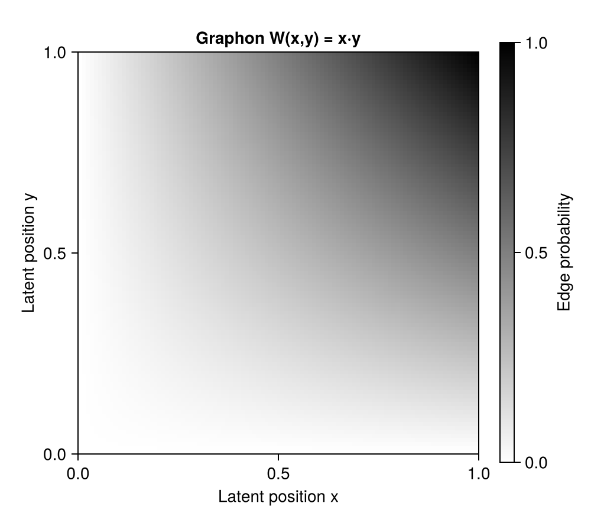
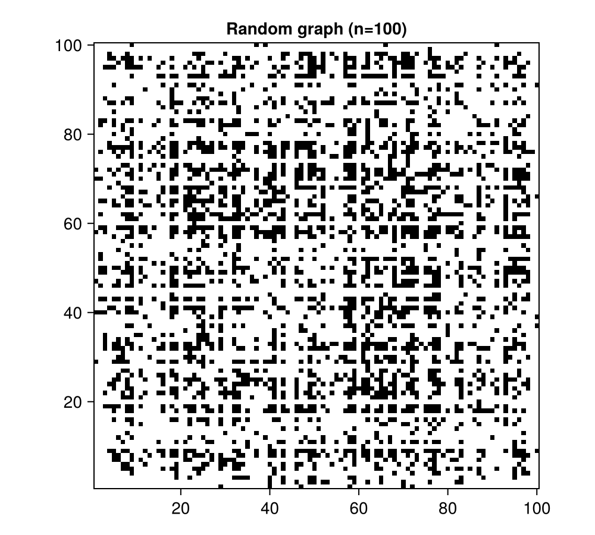
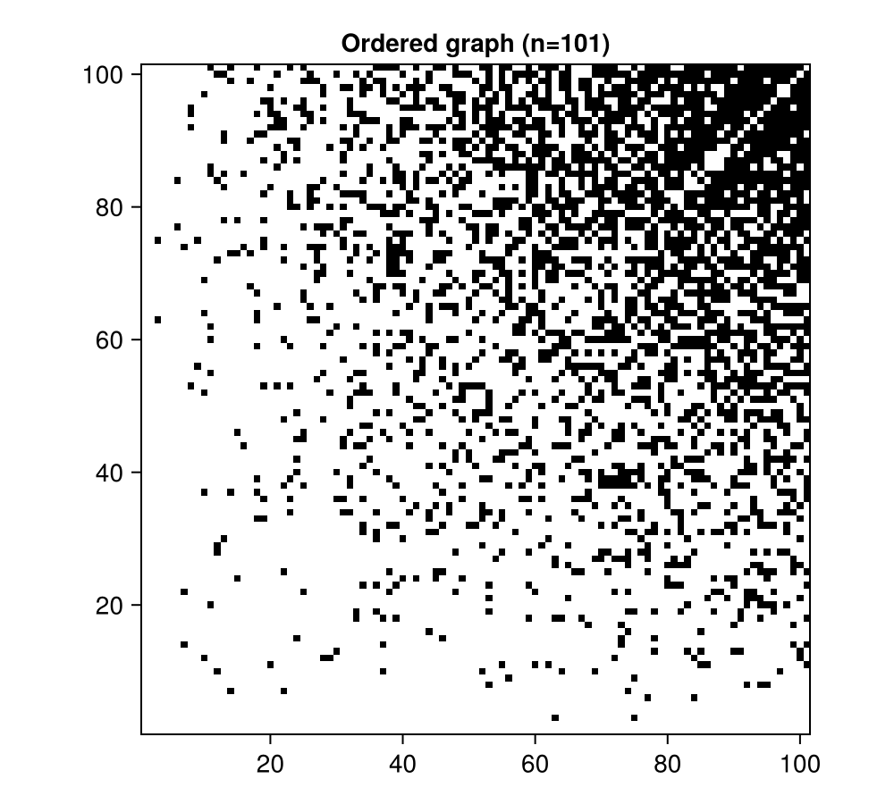

Getting Started with Graphons
This tutorial introduces graphons and shows how to use Graphons.jl to sample random graphs. We'll cover the basic concepts, create simple graphon models, and visualize the results.
What is a Graphon?
A graphon (short for "graph function") is a mathematical object that represents the limit of large random graphs. Formally, it's a symmetric, measurable function:
\[W: [0, 1]^2 \to [0, 1]\]
Think of a graphon as a continuous generalization of a stochastic block model (SBM). Instead of discrete blocks, every point in the unit square [0,1]² has an associated probability.
How Graphs are Generated from Graphons
To sample a random graph with n nodes from a graphon W:
- Assign latent positions: For each node
i, draw a random position ξᵢ ~ Uniform[0,1] - Sample edges: For each pair of nodes
(i,j), the probability of an edge is:
\[P(\text{edge between } i \text{ and } j) = W(\xi_i, \xi_j)\]
The latent positions ξᵢ represent hidden "types" or "communities" of nodes. Nodes with similar latent positions are more (or less) likely to connect, depending on the graphon function W.
Setup
Let's load the packages we'll need:
using Graphons
using Random
using CairoMakieExample 1: A Simple Quadratic Graphon
We'll start with a classic example: W(x,y) = x·y
This graphon creates graphs where nodes with higher latent positions (closer to 1) are more likely to have edges. Nodes near 0 are sparse, while nodes near 1 form a dense subgraph.
First, define the graphon function:
function W_quadratic(x, y)
return x * y
endW_quadratic (generic function with 1 method)Create a SimpleContinuousGraphon object:
graphon = SimpleContinuousGraphon(W_quadratic)SimpleContinuousGraphon{BitMatrix, typeof(Main.W_quadratic)}(Main.W_quadratic)Now we can evaluate the edge probability at any point:
@show graphon(0.2, 0.8) # Low probability
@show graphon(0.9, 0.9) # High probabilitygraphon(0.2, 0.8) = 0.16000000000000003
graphon(0.9, 0.9) = 0.81Visualizing the Graphon
Let's visualize the graphon function as a heatmap. Brighter colors indicate higher edge probabilities.
fig = Figure(size = (500, 450))
ax = Axis(fig[1, 1],
xlabel = "Latent position x",
ylabel = "Latent position y",
title = "Graphon W(x,y) = x·y",
aspect = 1)
hm = heatmap!(ax, graphon, colormap = :binary, colorrange = (0, 1))
Colorbar(fig[1, 2], hm, label = "Edge probability")
fig
The diagonal pattern shows that nodes with similar (and high) latent positions are very likely to connect.
Sampling Random Graphs
Now let's sample actual graphs from this graphon!
Random Latent Positions
The simplest way is to use rand, which automatically draws random latent positions:
Random.seed!(42)
A_random = rand(graphon, 100);This creates a 100×100 adjacency matrix. Let's visualize it:
fig = Figure(size = (500, 450))
ax = Axis(fig[1, 1],
title = "Random graph (n=100)",
aspect = 1)
heatmap!(ax, A_random, colormap = :binary)
fig
Notice how edges cluster in the bottom-right corner? That's because nodes with high latent positions (drawn randomly) tend to connect more densely.
Fixed Latent Positions
Sometimes we want reproducible graphs or to see the structure more clearly. Use sample_graph with explicit latent positions:
ξs = 0.0:0.01:1.0 # Evenly spaced from 0 to 1
A_ordered = sample_graph(graphon, ξs)
fig = Figure(size = (500, 450))
ax = Axis(fig[1, 1],
title = "Ordered graph (n=$(length(ξs)))",
aspect = 1)
heatmap!(ax, A_ordered, colormap = :binary)
fig
With ordered latents, the structure is crystal clear! The density increases smoothly from top-left (sparse) to bottom-right (dense).
Working with Sparse Matrices
For large, sparse graphs, use sparse matrix representations for efficiency:
using SparseArraysCreate a sparse-matrix graphon:
graphon_sparse = SimpleContinuousGraphon(W_quadratic, SparseMatrixCSC{Bool, Int})SimpleContinuousGraphon{SparseArrays.SparseMatrixCSC{Bool, Int64}, typeof(Main.W_quadratic)}(Main.W_quadratic)Sample a large sparse graph:
A_sparse = rand(graphon_sparse, 1000)
println("Matrix type: ", typeof(A_sparse))
println("Number of nonzeros: ", nnz(A_sparse))
println("Density: ", nnz(A_sparse) / (1000^2) * 100, "%")Matrix type: SparseArrays.SparseMatrixCSC{Bool, Int64}
Number of nonzeros: 251568
Density: 25.1568%Key Takeaways
- Graphons are continuous functions W: [0,1]² → [0,1] that generate random graphs
- Latent positions ξᵢ ∈ [0,1] determine each node's "type"
- Edge probability between nodes i and j is W(ξᵢ, ξⱼ)
- Use
rand(graphon, n)for random graphs with random latents - Use
sample_graph(graphon, ξs)for controlled/reproducible graphs - Use
empirical_graphon(graphon, k)to discretize into k-block SBMs - Sparse matrices are efficient for large, low-density graphs
Next Steps
- For more on Stochastic Block Models with community structures and core-periphery patterns, see the next tutorial on Block Models
- For multiplex networks and graphs with rich edge attributes (weights, types, etc.), see the Decorated Graphons tutorial
This page was generated using Literate.jl.